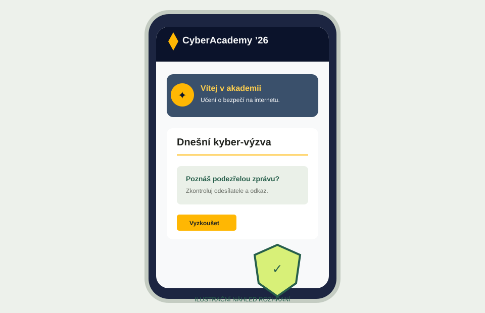

Denní kyber-výzva
Krátké zadání dává návštěvníkům příležitost přemýšlet o bezpečnosti v konkrétním příkladu.
CyberAcademy je vzdělávací projekt o bezpečném chování na internetu. Krátké úkoly a názorné prvky pomáhají proměnit téma v něco, co si lze rovnou vyzkoušet.
Otevřít CyberAcademy ↗
Krátké zadání dává návštěvníkům příležitost přemýšlet o bezpečnosti v konkrétním příkladu.
Otočný štít v Three.js mění vzhled podle postupu v úrovních projektu.
Analyzátor pomáhá zamyslet se nad zprávou, která může být podvodná.
Projekt spojuje responzivní web, jednoduché interakce a 3D grafiku. Veřejná ukázka se v tuto chvíli zastaví na přihlášení. Přístup nebo předvedení lze domluvit e-mailem.
Požádat o ukázku CyberAcademy ↗